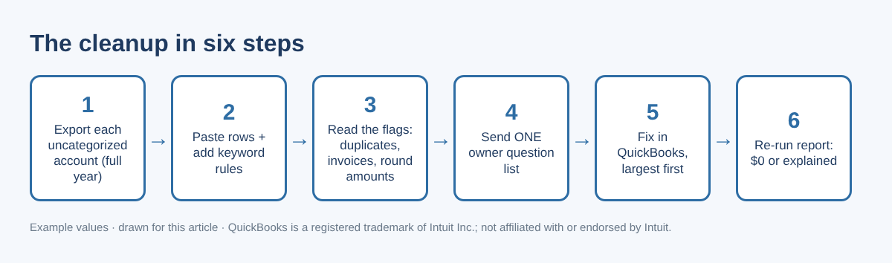
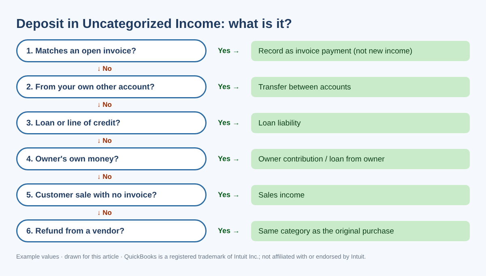
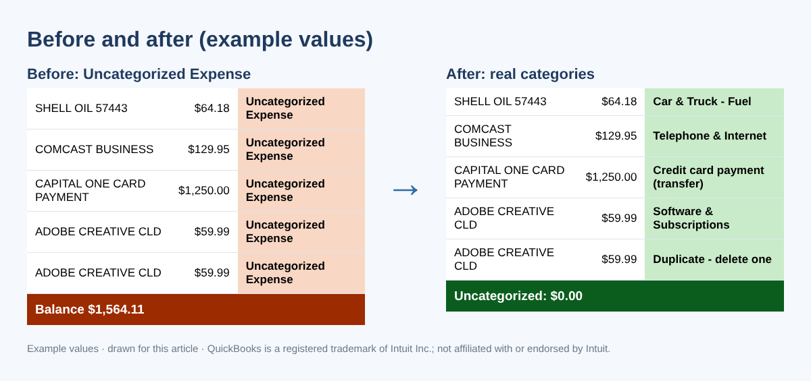
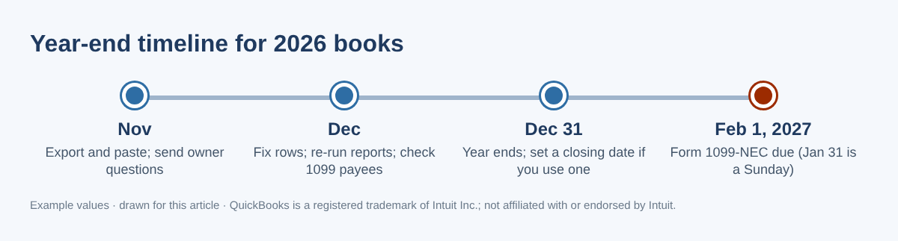

How to Clear Uncategorized Income, Expense and "Ask My Accountant" Before Year-End
↓ Get the free Excel + PDF kit for this article
Open your Profit and Loss in November and you may find a line called Uncategorized Expense or Uncategorized Income with a number much bigger than you expected. On the Balance Sheet there may be an Uncategorized Asset, and in older desktop files an account called Ask My Accountant. These accounts fill up quietly all year: a bank-feed transaction gets added without a category, a deposit is saved "for later", an import brings in rows with no account. Owners and bookkeepers ask about them in accounting forums every year-end, and the usual answer is "go through them one by one" — which is right, but not very helpful when there are 300 rows.
Why it matters: money in these accounts is not on the right line of your tax return. Real expenses can be missed, personal spending can look like business spending, customer payments can be counted twice, and a contractor you paid $3,000 may never show up on your 1099 list. This guide shows a method you can follow with a spreadsheet you build yourself, then the exact places to fix each row in QuickBooks Desktop and QuickBooks Online.

Step 1: Back up, then export one report per account
Before you change anything, back up your company file (Desktop) or save your current reports (Online). Then run Transaction Detail by Account for the full year, filtered to one uncategorized account at a time.
- QuickBooks Desktop: Reports › Accountant & Taxes › Transaction Detail by Account › Customize Report. On Display set the dates; on Filters choose Account and pick the uncategorized account. Export with Excel › Create New Worksheet.
- QuickBooks Online: Reports › search "Transaction Detail by Account", set the period to the full year, filter the report to the uncategorized account (the filter is labelled Account or Distribution account depending on your report view), then Export › Export to Excel.
Keep these columns: Date, Type, Num, Name, Memo/Description, Amount. Add one column called Source and type which account the rows came from. Delete the running Balance column.
Step 2: Let keyword rules do the easy 60%
Most uncategorized rows are boring repeat vendors: fuel, phone, software, bank fees. Make a small rules table on the side — a keyword in column K and the category in column L (for example SHELL → Car & Truck - Fuel, COMCAST → Telephone & Internet). Then, with Name in column D and Memo in column E, this formula in the first row suggests a category:
=IFERROR(LOOKUP(2,1/((ISNUMBER(SEARCH($K$2:$K$40,D2&" "&E2)))*($K$2:$K$40<>"")),$L$2:$L$40),"ASK OWNER")
If two keywords match, the lower rule in the list wins, so put specific rules (for example CARD PAYMENT) below general ones (TRANSFER). In Google Sheets, wrap the formula in ARRAYFORMULA( ). Copy it down. Every row that still says ASK OWNER is a real question.
Step 3: Add three warning formulas
A category suggestion is not enough. Three quick checks catch the expensive mistakes (Amount in column F, Date in column A):
- Possible duplicate: =COUNTIFS($A:$A,A2,$D:$D,D2,$F:$F,F2)>1 — same date, name and amount, often a bank-feed row plus a manual entry.
- Round amount: =AND(MOD(ABS(F2),100)=0,ABS(F2)>=500) — $500, $1,000, $5,000 are usually transfers, loans or owner money, not purchases.
- Large amount: =ABS(F2)>=2500 — ask for the receipt; equipment and loan proceeds hide here.
For every row from Uncategorized Income, also search your open invoices for the same amount. A deposit that matches an open invoice is a customer payment, not new income.
| Name (example) | Amount | Source | Suggested | Warning |
|---|---|---|---|---|
| SHELL OIL 57443 | $64.18 | Uncategorized Expense | Car & Truck - Fuel | — |
| ADOBE CREATIVE CLD | $59.99 | Uncategorized Expense | Software | Possible duplicate |
| ZELLE FROM CUSTOMER | $975.00 | Uncategorized Income | ASK OWNER | Check open invoices |
| DEPOSIT | $5,000.00 | Uncategorized Asset | ASK OWNER | Round + large amount |
| AMZN Mktp US (return) | ($42.50) | Uncategorized Expense | Office Supplies | Refund: use original category |
Table 1. Example rows after Steps 2 and 3. All names and amounts are examples.
Step 4: Send one question list to the owner
Filter the sheet to ASK OWNER, sort by amount (largest first), and send that list once. Ask for short answers — "fuel", "personal", "loan", "customer #1021" — and receipts for anything large. Never ask for bank passwords or full account numbers; you do not need them. The decision tree below covers most deposits.

| You see | It is often | Usually goes to |
|---|---|---|
| Credit card payment from checking | Paying the card balance | Transfer to the card account (not an expense) |
| Personal purchase on a business card | Owner's spending | Owner draw / distribution or shareholder account |
| Loan payment | Principal plus interest | Split: loan liability + interest expense |
| Payroll provider debit | Net pay, taxes, fees | Split using the payroll report |
| IRS or state tax payment | Payroll, business or personal tax | Liability, tax expense or owner draw — check the notice |
| Zelle or Venmo to a person | Contractor, refund or personal | Contract labor (get a W-9), refund or draw |
Table 2. General patterns only; the right account depends on your entity type and your accountant's setup.
Step 5: Fix each row in QuickBooks
QuickBooks Desktop
- Open the same Transaction Detail by Account report in QuickBooks and double-click a row.
- Change only the account on that line, then Save & Close. Keep the date, amount and bank account the same so reconciliations are not affected.
- Accountant and Enterprise editions can do many rows at once: Accountant › Client Data Review › Reclassify Transactions, select rows, tick Account to, pick the account and click Reclassify. Intuit notes the tool cannot change transactions that use A/R or A/P (invoices, bills) or transactions linked to other transactions — open those one by one.
QuickBooks Online
- Run the report in QuickBooks Online and click a row; the transaction opens. Change the category on that line and save.
- For rows that came from the bank feed, you can also go to Banking › Bank transactions, open the tab with already-added transactions, choose Undo on the row and categorize it again. Undo is the cleanest fix when a row was matched to the wrong transaction. Tab names have changed over time, so look for the tab that holds added transactions.
- With QuickBooks Online Advanced, or through your accountant's QuickBooks Online Accountant, use Settings (gear) › Reclassify transactions (in some versions under Dimensions › Dimension assignment). Choose the account type and the uncategorized account, select rows, Reclassify, pick the new account and Apply. Intuit lists limits: the bank account on an expense cannot be changed there, transactions with items allow class changes only, and payroll transactions cannot be changed.

Step 6: Re-run the report and check your 1099 list
Run the report again. Each uncategorized account should be $0, or a small balance you can explain in one sentence. Then total money paid per payee with =SUMIFS($F:$F,$D:$D,D2) and review anyone at $2,000 or more. For payments made in 2026, the IRS minimum for reporting nonemployee compensation on Form 1099-NEC is $2,000. Payments you made by credit card, debit card or a payment app are reported by the payment company on Form 1099-K, not by you on 1099-NEC. Form 1099-NEC is due January 31; for 2026 payments that date is a Sunday, so the due date is February 1, 2027.

Common mistakes
- Booking a deposit as income when the invoice is still open. Your income is counted twice and the customer still looks unpaid.
- Calling a credit card payment an expense. The purchases on the card are already expenses.
- Changing the amount or bank account while fixing the category. That breaks a reconciliation you already finished.
- Editing a year that is already filed. Ask your accountant whether to adjust in the current year instead.
- Moving everything to "Miscellaneous". It empties the account but keeps the problem.
- Asking the owner twenty separate times. One sorted list gets answered; twenty texts do not.
FAQ
Will recategorizing undo my bank reconciliation?
Changing only the category (income or expense account) does not change the cleared amount, so the reconciliation stays the same. Changing the date, amount or bank account can.
Can I just make one journal entry to move the whole balance?
You can move a total with a journal entry, but the original transactions keep the wrong account, vendor reports stay wrong and 1099 totals are not fixed. Fixing each transaction is slower but cleaner; ask your accountant if you prefer an entry.
What is Uncategorized Asset, and should it be zero?
It often holds transfers with one side missing, opening balances or deposits brought in without an account. Compare it to your bank and loan statements. Talk to your accountant before moving an old balance to equity.
The owner does not remember a transaction. Now what?
Look at the bank statement image or the card receipt, write a one-line note, and leave it for your tax preparer as a clearly listed open question rather than guessing.
Checklist
- Backed up the file or saved reports
- Exported each uncategorized account for the full year
- Rules added for repeat vendors; warnings checked
- One owner question list sent and answered
- Rows fixed in QuickBooks, largest first, category only
- Report re-run: $0 or explained
- Payees of $2,000+ reviewed for Form 1099-NEC (due February 1, 2027)
You can download the ready-made Uncategorized Transactions Cleanup Kit for free in the Free kit download box below (Excel + PDF guide, no sign-up).
This article is for education only and is not tax, legal or accounting advice. Rules change and every business is different; talk to your tax professional about your situation. All names and amounts shown are examples. QuickBooks is a registered trademark of Intuit Inc.; not affiliated with or endorsed by Intuit.
Sources
- IRS — Instructions for Forms 1099-MISC and 1099-NEC (Rev. December 2026)
- Intuit — Reclassify or move multiple transactions (QuickBooks Online)
- Intuit — Accountant tools: Reclassify your client's transactions (QuickBooks Desktop)
- Intuit Community — How to clear my uncategorized asset account
Free kit download
Tools to follow this article step by step. No sign-up needed.
- Excel workbook (.xlsx)Uncategorized_Cleanup_Workbook_2026_EN.xlsx · 93 KB
- Step-by-step guide (PDF)Uncategorized_Cleanup_Guide_2026_EN.pdf · 71 KB
Free to use for yourself and your own business; please do not resell or redistribute. General information, not tax, legal or accounting advice; check every figure against your own records. QuickBooks is a trademark of Intuit Inc.; BIZLEX is not affiliated with Intuit.